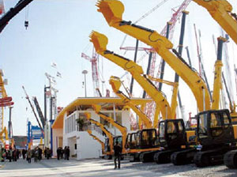

2014年全省规模以上石化工业企业实现产值3182亿元。
2014年全省规模以上石化工业企业实现产值3182亿元。
现有炼油能力超过2000万吨，生产乙烯超过100万吨。
漳州古雷石化是全国七大石化基地之一，规划生产能力为炼油5000万吨/年以上、乙烯500万吨/年。
福厦沿海是中国首批认定的九个"国家电子信息产业基地"之一。
2014年销售收入6458亿元，居全国第7位。
拥有新型显示、计算机和网络、软件三个产值超千亿元产业集群。
形成以厦门火炬产业园和福清融侨显示器产业园为代表的福州、厦门国家级信息产业基地。
拥有宸鸿、戴尔、友达、捷联、华映、冠捷显示和达云精密等产值超百亿元企业。
2014年实现规模以上工业总产值5293亿元。
工程机械
福建省是中国主要的工程机械制造基地
拥有规模以上整机工程机械生产企业85家，工业总产值234亿元。
主要产品有装载机、挖掘机、压路机、路面施工机械、叉车、港口机械等。
汽车产业
形成福州、厦漳泉和龙岩三明三大产业集群。
拥有整车生产企业8家，整车生产能力55万辆，产品涵盖乘用车、客车、货车等。
汽配企业400多家，其中福耀集团是全球第二大汽车玻璃专业供应商。
2014全省汽车行业完成工业总产值970亿元。
船舶修造
已形成闽江口、三都澳、湄洲湾、厦门湾四大船舶集中区
2014年，全省船舶修造业实现工业总产值280亿元，居全国第七位。
现有规模以上船舶修造企业84家，年造船生产能力400万载重吨